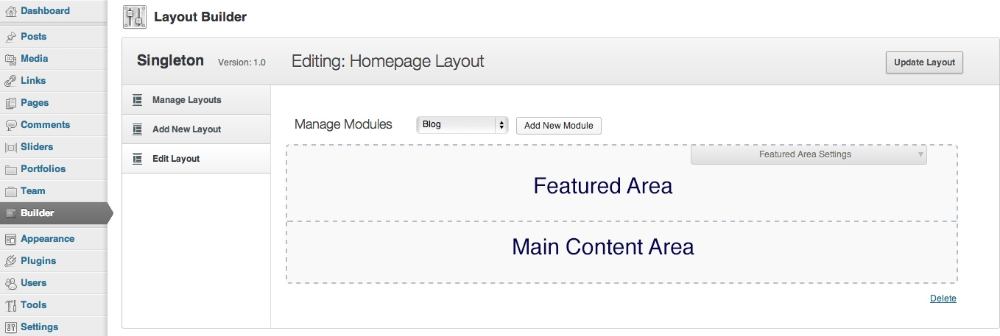
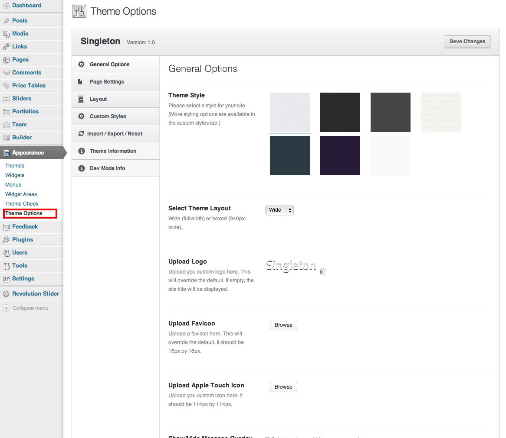

NewsCore Theme Documentation
A Premium WordPress Theme by @RadiumThemes
Radiumthemes.com
1Introduction
Welcome to Radium Themes and thank you for purchasing this amazing theme.
Newscore is a theme we designed and built for a content heavy websites such as news sites, magazines, and video sites. We have included most of the features that are needed to run a successful website with SEO optimization, performance and semantic HTML at the core. Here is an overview of what to expect.
- Theme options to adjusting the site's settings
- A sidebar manager for creating and managing new sidebars. This is important if you need to create a sidebar for a particular page
- We've included several page templates with preset layouts and capability to get you started quickly
- Shortcodes for generating complex functionality - the shortcode manager makes it real easy
- Various blog layouts
- Megamenus
- Woocommerce online shop support
- Powerful Gallery manager
- Forums powered by bbpress
- User community powered by buddypress
- Clean and customizable code. We've used the Wordpress API as much as possible and commented the code as well in case you want to get your hands dirty
- Video management plugin
If you like the theme, please show your appreciation by taking the time to rate it on Themeforest. 5 stars would be awesome :)
Alright, lets get into the details.
2Theme package
After you've purchased the theme from ThemeForest, head over to the downloads tab of you account and download the Zip package. The package should be named Newscore-Package.zip. Next unzip (uncompress) using your favorite unarchiving tool.
In the package you will find various folders and files such as documentation, license, PSD files, plugins, and the theme files.
Inside that package you will find the following files/folders:
- NewsCore folder
- Documentation folder
- Extras folder - contains child theme and demo content data
- Licensing folder
- Screenshots folder
- NewsCore.zip
3How to Install the theme and plugins.
After you unpacked the files you now need to install it into a Wordpress installation. If you don't have Wordpress running already read this to get started http://codex.wordpress.org/Installing_WordPress
Installing the Theme
Log into your wordpress admin, which is typically www.yoururl/wp-login.php. Once you’re in, click on the Appearance tab and then click on Theme. Click on the “Install Theme” link located at the top of the page, and then click “Upload”. Locate the the file NewsCore.zip (NOT the entire NewsCore-Package that was downloaded from ThemeForest, just NewsCore.zip) and upload the zipped file to WordPress. After the theme zip is finished uploading, activate the theme by pressing “activate”.
Installing the plugins
For you to enjoy all the features offered by this theme, you need to install some plugins as well.
We've automated this process, once you activate the theme you should see an alert that will prompt you to install the necessary plugins. But just incase that doesn't work,
Go to your WordPress admin panel. Click on Plugin » Add New. Then click on the Upload Tab.
Browse the file and upload it (zip files only). Make sure that you click on Activate the plugin, now you have installed the WordPress plugin.
Do that for all the plugins.
Installing the demo data
We've automated the process for importing demo data into a test or development website.
This will replicate what you see in our theme demo websites.
Before you begin make sure you have the required plugins activated. Click on the import demo data link in the Appareance menu. This will automatically import the data. The process will take while and requires that you have an internet connection.
4Recommended Plugins
We recommend these plugins for use with the theme.
- BBPress
- BuddyPress
- Contact 7
- Radium Galleries Lite
- Radium Html5 Media
- Radium Shortcodes
- Radium Tweets
- Video Central
- Woosidebars
- Woocommerce
- Wordpress SEO by Yoast
5Layout Builder
The theme allows you to unique layouts for the homepage as needed.
Creating a layout.
First go the the layout builder page and click on add layout
Next: Add a title to the layout and select a sample layout to get started. We've created some sample layouts to get you started quickly. Select any that you like and get started.
Once you've selected the starting point, click Add New Layout and one will be created for you. This will move to the next edit screen where you can now edit the layout as you see fit using a drag and drop interface.
The builder page is divider into two sections. The top section is the featured area which is shown above the content area when on the front end. The second section is the main content area.

The featured area is typically used for sliders, slogans or call to action.
The main content area 1240px wide also horizontally centered.
Adding Elements
Once on the builder editor page shown above, you can add any modules (also called elements) you need and drag and drop them about to reorganize. You can also drag an element from the featured area into the main content area and vise versa.
To add a element, select one from the Manage Modules select box.

The options available are:
- Content Carousel
- Content Carousel Big
- Content Grid Slider - a grid slider that shows either featured, latest or category posts
- Content Slider - a simpler slider
- Content - This pulls content form the page where the layout is being used, from another page or from content entered into the module itself
- Blog - For displaying blog content
- Blog Category Small
- Blog Latest - Tabbed element that will display Latest, Popular and Featured.
- Blog Reviews - For displaying review posts
- Divider
- Widget area - you can add widget area in the middle of a page for example. You can create new widget area using the widget area manager
- Video Central - show featured, latest videos
- Contact Form - also available if form builder plugin is activated
Each elements contains its own set of options most of which are self explanatory.
Once you've added the elements you need on the page, you now drag them about and adjust their widths as needed. Remember to click Update Layout to save it.
Styling Rows and elements
In this new version of the framework, we've added a neat new capability that allows you to style element and row styles. Here is how to use it.
Here is some of the options available.
Assigning the Layout to a page
Once you have your layout ready, the next step is to add it to a page. Go to Page -> Add new and create a page. In page Attributes under Templates, select Custom Layout and then select one of the layout you created in the select box that appears. Save the page and view it in the frontend to see your changes
To delete a layout go to its edit screen and click delete and confirm the dialog box that popup up.
6Page Creation
Creating your own page has been never so easy. To make the first step please go to Pages > Add new enter the page title and publish the page. At the bottom of the page editor are a few setting options. These are for setting up the sidebar location and the page subtitle.
Another important setting to note that will be useful when using page template is located on the right called the Page attributes, specifically the Template selector This is used to set the page template to be used.
7Page Templates
Page templates are a clever way of creating a preconfigured page layout. We've included a few of these. All you need to do to use one is create a page, and in page attributes select the one you need.
The available page templates are:
- Blog Archive
- Home - This supports 2 sidebars and the layout builder
- Custom Layout - used by the layout builder and can have
- Video Home
- Video List
- BBpress Page templates
- Buddy Press Page Templates
The blog archive page template has its own set of settings for adjusting things like number of columns, number of items to show etc.
8Theme options panel
Now we will cover the theme options panel. The theme options are used to store theme settings such as the logo, theme skins, theme layout, etc
The theme options panel is located under Appearance - > theme options

The theme options panel is mostly self explanatory.
You can export/or import theme settings using the Import/export/reset tab.
9Shortcodes
We understand that shortcodes can be daunting and intimidating to many that is why we've included an easy to use shortcode manager in addition to the layout builder we mentioned earlier.
Adding a shortcode in content
You can add a short code to a page by clicking the short codes icon in the editor this will show a drop down of all the available short codes
Once you select the short code you need, a popup will appear where you can input all the settings you need to make it work.

You can also use shortcodes in the layout builder elements if you need to. Just generate the code using the method above and copy them over into the element.
10Setting up the Blog
Creating your Blog Page
Create a new page within the “Pages” > “Add New” menu, with the “Default” Template applied. Name and publish the page. From within your dashboard, navigate to the “Settings” panel and click on “Reading.” From the corresponding “Posts Page” drop down, choose the page that you just created (that has the Default Template applied). Ensure that you save your changes.
Alternatively, You can use the Blog page template and skip the steps above.
Adding a Blog Post
From within your WordPress dashboard navigate to the Posts tab along the side bar and click “Add New.” To add a custom excerpt, ensure the excerpt checkbox within the screen option is checked. (Top right of the blog page, near the Admin Bar)
Uploading Images
To upload an image, click on the default “Upload/Insert Media” icon at the top of the WordPress editor. The recommend width of the blog images is 1000 pixels.
Blog Featured Images
To upload a featured image, locate the Featured Image Panel on the post editor page and click “Set Featured Image.”
Blog Post Formats
The theme supports various post formats:
- audio
- gallery
- video
- standard
- quote
Some of these once selected will reveal some settings that need to be input for them to work properly.
11Woocommerce
NewsCore supports woocommerce and once the plugin is activated, it will prompt you to automatically create the shop pages for you. This is useful since you might need to add shop pages to your custom menus.
By default, WooCommerce will display all of your products in the shop catalog. If you want to display the shop categories with the category images rather than all of the products like the theme demo you can change the catalog settings, "WooCommerce > Settings > Catalog".
WooCommerce Image Options
You need to make sure the default WooCommerce image sizes are the correct ones for your newly installed theme. These settings affect the actual dimensions of your product images in the shop pages.
- Navigate from your WordPress Dashboard to WooCommerce → Settings → Catalog and find the "Image Options" section at the bottom of the page.
- Update those values with the following ones:
- Catalog Images: Width = 230, Height = 300
- Single Product Image: Width = 500, Height = 500
- Product Thumbnails: Width = 200, Height = 200
Installing on a site with existing content?
If you are not installing the theme on a fresh WordPress instance, you probably already have posts, pages or products added to your site. After activating the theme, you'll need to have WordPress recreate all image thumbnails to make the sizes fit with your new theme. You don't need to do it manually, Regenerate Thumbnails WP plugin can automatically handle this job for you.
Woocommerce Resources
12Menu creation
The theme is packaged with two WordPress Menu locations, the Main Menu and a Footer Menu.
The Main Menu is located at the top and supports megamenus. Megamenu drop-downs support multiple columns and can have images and/or html. The footer is located, well, in the footer.
To set these locations, simply create two menus in the WordPress Menu Dashboard "Dashboard/Appearance/Menu/Add New" and set the theme locations for "Main Menu" and "Footer Menu" on the menus page (top left).
Mega Menu
The Mega Menus in NewsCore can handle up to four columns of data. To set up a menu, click the "Use as Mega Menu" check box on the menu item and list out drop down menu items below it. See the image below to see how the first column of the demo mega menu is set up. Simple enough.
How a Mega Menu is set up (with a text description entry).
Menu Icons
To use icons in the menu all you need to do is add an icon class to the menu icon field. The theme uses the font awesome icon fonts. You can see a full list of available fonts here http://fontawesome.io/icons/. To use an icon from that list change the icon prefix from fa- to icon- eg fa-home becomes icon-home.
To hide the menu title and just show the icon, add an underscore before the Navigation label.
13Widgets & Sidebars
Widget Area Overview
There are 9 custom widgets built straight into the theme. Just select the one you would like use from the widget dashboard and put it into one of the default widget areas (or one that you added yourself).
On most of the theme's pages (default templates, blog, team and FAQ) you have the option to choose whether or not you would like a sidebar present and the location of that sidebar (left or right). Just select the location of the sidebar (located beneath the WordPress Editor) and save it. If you have not set a new sidebar for that page, the default sidebar will take over.
Selecting your sidebar location.
14Sidebar How To
You can easily build an unlimited number of sidebars to use on whatever pages you'd like. You could even have a different sidebar on every page if you'd like. All you need to do is:
- Go into your WordPress Dashboard
- Go to Widgets/Sidebar Widget Areas
- Name your widget area and define the rules (display location)
- Save your widget area
- You will then automatically see your sidebar generated in the Widget Dashboard
15Contact Page
Go to Pages -> Add New to create a new page.
Insert the contact form shortcode into the text editor e.g. [contact email="youremail@address.com"]. Replace youremail@address.com with your own email address.
You can also use the layout builder to add the contact form to a page. If you wish to use that method, use the layout builder guide above
16Video Central
Installing Video Central
The plugin is included in the theme package. Extract it and install it into WordPress.
Add a video
The plugin currently supports three kind of videos. Youtube, Vimeo and self hosted videos.
- Go to Videos -> Add New to create a new video page.
- Select the kind of video.
- Add a video id. If you selected youtube or vimeo Get video id from the url eg http://youtube.com/watch?v=123456. The id is the last part of the url.
- If you select a self hosted video, you will need to upload the video in 3 file formats, mp4, webm, and ogg. This ensures that the videos plays across the maximum number of devices.
- In the case of self hosted video, you will need to upload a video poster otherwise one will be imported automatically.
Importing videos
This feature currently only works for youtube videos although I'll be adding support for Vimeo too later on.
Go to Videos -> Import Videos.
Select the parameters you need to import the videos
Import the videos
Add a video Homepage
The plugin automatically includes 2 page templates, namely - Video Home and Video List.
The Video Home template includes a Featured Videos slider while the Videos List doesn't.
To create a video homepage, got to Pages -> Add New. Select one of the page templates mentioned above. Save.
17 BuddyPress / BBPress
Installing BuddyPress
Before you begin please keep in mind that buddypress is faily large and complex plugin. Please take the time to read more on it on https://buddypress.org/.
Go to Plugins -> Add and type "BuddyPress" and install and activate the plugin called BuddyPress. The BuddyPress settings are located on the left hand side of the page under BuddyPress -> Settings.
Installing bbPress
bbPress now comes preinstalled with BuddyPress. Go to Settings -> Forums and in the Archive Slugs and Single Slugs sections make sure there are no Possible BuddyPress conflict error messages. If there are you will need to change the name of the bbPress slugs or the slugs of the conflicting pages.
18Translation
Translating The Theme
- Install the translation program Poedit.
- Open the newscore/includes/languages/en_EN.po file with Poedit.
- Translate the file with Poedit, click here for more information.
- Locate wp-config.php, which is in the root directory of your WordPress installation and change the language, click here for more information.
Updating Your Translation Files
If you have updated the theme and the changelog says the translation files have been updated, if you have modified the translation files or created new ones you will want to update them rather than using the new ones. To do this insert your modified translation file (e.g. en_EN.po) into the newscore/includes/languages/ folder overwriting the new file. Now open this file in PoEdit and click Update and it will display the text changes since the latest theme update.
19Customization
Customization is encouraged when using this theme. We have provided a few ways to help you change things like the colors and layout. You may need to go beyond just the colors however and in this case we recommend that you use the child theme provided in the "Extras" folder of the theme package to customize your site.
Read more on child themes http://codex.wordpress.org/Child_Themes
This theme's stylesheets, javascript and language files are managed by grunt. The stylesheets are written in SCSS. We have automated generation of css files, sprites, language files using this powerful utility. There are two main tasks that you can use.
grunt build- This will generate css files, verify, compress and combine javascript files. Once compilation is completegrunt watchwill monitor the files for any new changes and compile the files automatically.grunt build-commit- This will generate the images sprites and scan php files and generate .po/.mo files for language translation.
Read more on grunt here. http://gruntjs.com/
The theme makes extensive use of WordPress actions and filters on almost all functions. This makes customization and overriding features very easy. Read more http://codex.wordpress.org/Plugin_API/Action_Reference and http://codex.wordpress.org/Plugin_API/Filter_Reference
Developer Tools
An excellent way of styling your theme is by using the developer tools that come with most modern browsers. These developers tools allow you to see what HTML elements need to be styled and allows you to edit the styling of the theme within the browser window. These changes are not permanent and nobody else sees them, it's just a great way of adjusting the look of your site quickly. Here are some links to the developer tools for each of the major browsers:
- Google Chrome - Inspect Element Tool
- Firefox - Firebug Tool
- Internet Explorer 9 - F12 Developer Tools
20Support and Contacts
Thank you for taking the time to read this long document. If you have any questions you can send an email to frank@radiumthemes.com
* Please don't use the Themeforest comment system for support request. It's very difficult to keep track of support request from there. Same applies to twitter and comments posted on Facebook .